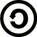

創用CC授權(Creative Commons)
- 著作權法規定，使用任何著作必須事先取得著作權人同意，如果著作採用創用CC授權，表示著作權人同意任何人只要符合授權條件都可以自由複製、散佈與使用這項著作。
- CC台灣社群：點選「找資源」可以搜尋創用CC素材。
- 使用CC0授權的素材時應留意可能牽涉到肖像權與商標權，所以最好避免使用素材中有人物、商標(LOGO)及商品的素材。
| 圖標 | 授權要素 | 縮寫 | 說明 |
|---|---|---|---|
| 姓名標示(Attribution) | BY | 必須標記作者。 | |
| 禁止改作(No Derivatives) | ND | 不能進行任何修改。 | |
| 非商業性(Noncommercial) | NC | 不能用於商業行為謀利。 | |
|  | 相同方式分享(Share Alike) | SA | 採用相同授權方式分享。 |
| 公眾領域貢獻宣告 | CC0 | 自由使用。 |
| 授權條款 | 授權標章 | 說明 |
|---|---|---|
| 姓名標示 BY | 允許使用者重製、散布、傳輸以及修改著作(包括商業性利用)，使用時必須按照著作人或授權人所指定的方式表彰其姓名。 | |
| 姓名標示-非商業性 BY-NC | 允許使用者重製、散布、傳輸以及修改著作，但不得為商業目的之使用，使用時必須按照著作人指定的方式表彰其姓名。 | |
| 姓名標示-非商業性-相同方式分享 BY-NC-SA |  |
允許使用者重製、散布、傳輸以及修改著作，但不得為商業目的之使用，若使用者修改該著作時，僅得依本授權條款或與本授權條款類似者來散布該衍生作品，使用時必須按照著作人指定的方式表彰其姓名。 |
| 姓名標示-禁止改作 BY-ND | 允許使用者重製、散布、傳輸著作(包括商業性利用)，但不得修改該著作，使用時必須按照著作人指定的方式表彰其姓名。 | |
| 姓名標示-非商業性-禁止改作 BY-NC-ND | 允許使用者重製、散布、傳輸著作，但不得為商業目的之使用，亦不得修改該著作，使用時必須按照著作人指定的方式表彰其姓名。 | |
| 姓名標示-相同方式分享 BY-SA | 允許使用者重製、散布、傳輸以及修改著作(包括商業性利用)，若使用者修改該著作，僅得依本授權條款或與本授權條款類似者來散布該衍生作品，使用時必須按照著作人指定的方式表彰其姓名。 |
CC授權素材網站
SVG(Scalable Vector Graphics)：可縮放向量圖形
- 由W3C所制定的網頁向量圖形及動畫標準。
- 以XML程式碼來描述形狀、路徑、文字和濾境效果的向量格式。
- 優點是檔案小，放大不失真。
AI(Adobe Illustrator)
- 由Adobe Illustrator向量圖編輯軟體所輸出的檔案格式。
- 優點是檔案小，放大不失真。
- CorelDRAW、Inkscape軟體皆可編輯AI圖檔。
ICO及ICNS
- ICO檔案是Windows系統的圖標格式，常用於網頁瀏覽器的Logo圖示、Windows系統桌面及iOS或Android系統的應用系統圖示。
- ICO圖示都是正方形，可以是單一尺寸及多種不同尺寸的集合。
- 作業系統在顯示icon圖示時，會自動選擇最適合當前環境的圖示來顯示。
- 如果ICO檔只有單一尺寸，系統將會進行縮放，會造成圖形因放大或縮小而模糊的狀況。
- ICO圖示尺寸有16*16、32*32、48*48、64*64、128*128、256*256，顏色有黑白、16色、256色及全彩，圖案本身以外的區域是透明。
- ICNS檔案是Mac專用的圖標檔案，與ICO格式一樣是由一個或多個圖案組成。
- icofx編輯軟體可編輯ICO及ICNS檔案，也可進行兩者之間的格式轉換。
網站加入Logo小圖示方式
- 在伺服器網站根目錄裡放入favicon.ico圖檔(Favorites Icon)，建議尺寸為16*16、32*32、48*48像素。
-
在<head></head>標記裡加入link語法：
顯示於網頁標題：<link type="image/x-icon" rel="shortcut icon" href="ico檔案路徑">
顯示於加入書籤：<link type="image/x-icon" rel="bookmark" href="ico檔案路徑"
網頁應用產生器
- CSS Layout產生器：Layoutit!-CSS Grid Generator
- 按鈕產生器：Button Generator、Button Optimizer
Button Generator按鈕產生器使用範例：
說明：三種按鈕使用<a href>、<button>與<input type="button">標記 ，class屬性都是button，因此都會套用button.css樣式檔裡面的「.button」樣式。其中<a href> 、<button>可以在元素內放置圖片，因此會顯示圖案；但<input>標記是空標記，瀏覽器根據 type屬性渲染元件，無法在裡面放其他元素，因此在CSS程式碼中的「.button:before」偽元素無作用。
網站配色
- 網站配色黃金比例為「主色彩60% : 次色彩30% : 強調色彩10%」。
- 主色彩佔了絕大部分的顏色，例如「網頁背景」。
- 次色彩是引導訪客區分出網站的主題與內容，例如「標題、選單、區塊」。
- 強調色彩適合用在小元素，例如「超連結、按鈕、圖示」。
- 選色配色工具： Color Hunt、 Coolors